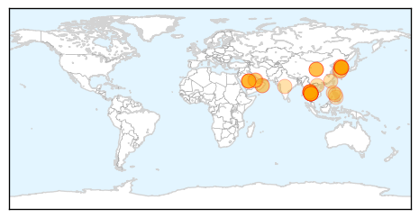

30 Day Trends
Web: 26 alerts, 0 warnings
Twitter: 8 alerts, 0 warnings
Top Articles:
- 1.000
- Malaysia confirms first MERS-CoV fatality
- 0.999
- MERS Reaches Thailand, Death Toll In Korea Now 24
- 0.999
- Middle East respiratory syndrome coronavirus (MERS-CoV) – Republic of Korea
- 0.999
- North Korea Claims It Has A Cure For MERS, AIDS, SARS, Ebola
- 0.999
- World Health Organization, WHO calls for stepping up vigil for MERS, Thailand confirms case
- 0.999
- Thailand reports first MERS case
- 0.999
- MERS spread shows signs of slowing
- 0.999
- Thailand confirms first Mers case in visitor from Oman
- 0.999
- As MERS virus spreads, is WHO doing enough? — RT Op-Edge
- 0.999
- (2nd LD) S. Korea reports another MERS death, one new case
- 0.999
- MERS in Thailand: PM insists killer virus is under control
- 0.999
- South Korea MERS outbreak: 24 dead, more than 160 infected
- 0.998
- Four-day wait to diagnose MERS stokes fears in Thailand
- 0.998
- SGGP English Edition- Vietnam’s health sector makes concerted efforts to prevent MERS-CoV
- 0.998
- Thai Health Ministry Confirms First MERS Case in the Country
- 0.997
- MERS: No cause for alarm in Philippines
- 0.997
- MERS pace slows in Korea; more under Thai monitoring
- 0.996
- Thailand Confirms First MERS Case: Health Ministry
- 0.995
- The Chosun Ilbo (English Edition): Daily News from Korea
- 0.994
- First Case Confirmed By Officials
- 0.993
- Thailand Examines 59 People after First MERS Case
- 0.993
- Thailand Examines 59 People after First MERS Case
- 0.993
- Going for Haj or to Thailand? Check out MERS advisory
- 0.991
- Thailand examines 59 people after first MERS case
- 0.991
- Govt to come up with detailed guidelines for MERS
- 0.990
- South Korea MERS outbreak has 'levelled off'; one new case
- 0.988
- PM Prayut: 'No MERS patient in Thailand yet'
- 0.984
- MERS Deaths Rise to 20 in South Korea
- 0.983
- Coronavirus Claims 24th Victim in South Korea
- 0.982
- MERS coronavirus spreads Thailand, China develops 15-minute MERS test
- 0.980
- First Case of MERS in Thailand Reported
- 0.979
- Be ready for MERS virus, schools told
- 0.979
- Coronavirus claims 24th victim in South Korea
- 0.970
- Family Members of 1st MERS Patient in Thailand Undergoing Tests
- 0.963
- More tests needed to rule out MERS for South Korean in Slovakia
- 0.949
- Update on latest MERS situation in Korea and Thailand
- 0.925
- Epidemiological update on MERS-CoV from South Korea
- 0.921
- North Korea claims it has a cure for MERS
- 0.919
- North Korea: cure for MERS is available
- 0.765
- DOH assures readiness for MERS-CoV
Top Tweets:
-
No tweets found for Jun 19, 2015
Web/News Articles

Tweets

Article Locations
Article Confidences